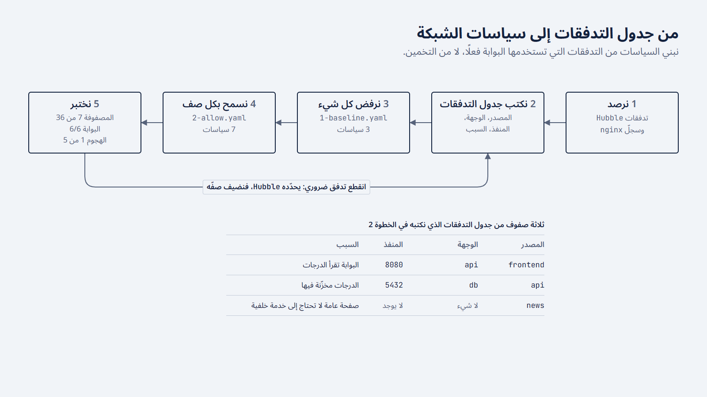
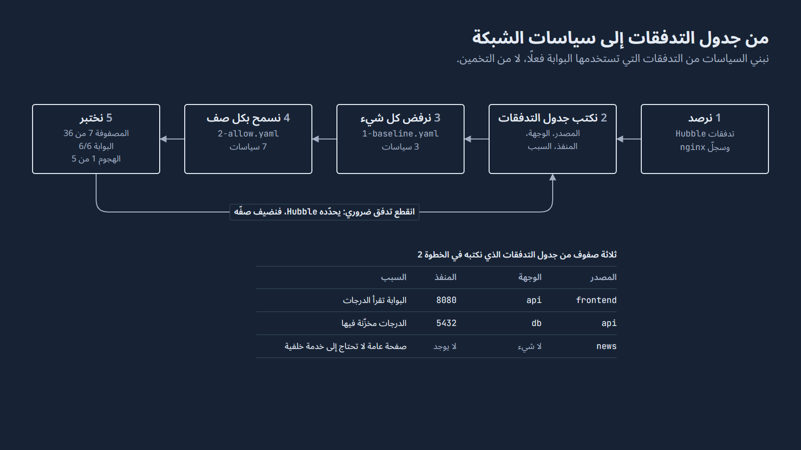

الفصل 9. تصميم السياسة
قبل أن نكتب سطراً واحداً من أي سياسة، نعرف بالضبط ما الاتصالات التي تحتاجها البوابة. نجعل البوابة تؤدي عملها كاملاً بينما يسجّل Hubble كل اتصال، ثم نقرأ مسارات HTTP من سجل frontend، ونحوّل المصدرين إلى جدولين: جدول تدفقات يسرد الاتصالات الثمانية التي يجب أن تبقى مفتوحة، وجدول منع يسرد ما يجب أن يبقى مغلقاً وخطوة الهجوم التي يوقفها كل مسار مغلق. في نهاية الفصل يكون الجدولان محفوظين في المجلد ~/microseg/evidence/ ويطابق جدول التدفقات الجدول الذي رأيناه في الفصل 1، ونعرف أي سياسة يجب أن تحمل كل إذن. يستغرق العمل نحو ساعة ونصف.
هل الشبكة مسطحة، وهل Hubble متصل؟
لا تصف التدفقات البوابة وصفاً صحيحاً إلا إذا كانت الشبكة ما زالت مسطحة، وكانت أداة Hubble لسطر الأوامر قادرة على الوصول إلى Hubble Relay. بدأ الفصل 4 هذا الربط بالأمر cilium hubble port-forward & وإعادة تشغيل الحاسوب تقطعه.
kubectl -n campus get ciliumnetworkpolicies
hubble statusيجب ألا يجد الأمر الأول أي سياسة. أما hubble status فيسأل Hubble Relay، عبر port-forward على المنفذ 4245، عن عدد العقد (nodes) التي يجمع منها التدفقات.
ما يجب أن نراه: لا سياسات، وHubble بحالة سليمة.
يجب أن يكون السطر الأول No resources found in campus namespace. وفي جزء hubble status السطر المهم هو Connected Nodes: 3/3 أي أن العقد الثلاث كلها متصلة. أعداد التدفقات في الأسطر الأخرى تتغير كل ثانية.
إذا ظهر شيء آخر
إذا أعطى hubble status خطأً طويلاً يحتوي هذا النص:
4245: connect: connection refusedتختلف بقية الرسالة من تشغيل لآخر. المنفذ 4245 هو المنفذ الذي يستمع عليه port-forward، والعبارة «connection refused» (رُفض الاتصال) تعني أن لا شيء يستمع هناك، أي أن port-forward لا يعمل. فإعادة التشغيل أو إغلاق نافذة Ubuntu تنهيه. الحل تشغيله من جديد في الخلفية، والانتظار خمس ثوانٍ، ثم إعادة الفحص.
cilium hubble port-forward &
sleep 5
hubble statusالرمز & في آخر السطر الأول يشغّل port-forward في الخلفية، فيعود موجّه الأوامر بينما يستمر هو في العمل، ويتوقف عند إغلاق نافذة Ubuntu هذه. يشبه الناتج ناتج الفصل 4. يظهر أولاً سطر مثل [1] 2817 وهو رقم المهمة ورقم العملية اللذان يعطيهما bash للأمر الخلفي، ويختلفان من جهاز لآخر. ثم يجب أن يعرض hubble status السطر Connected Nodes: 3/3 كما سبق. قد يطبع port-forward رسائل خاصة به فوق موجّه الأوامر، الآن أو لاحقاً. وإذا ظهر نص ولم يتبعه الموجّه، يكفي الضغط على Enter للحصول على موجّه نظيف.
إذا أعطى port-forward خطأً يحتوي هذا النص:
bind: address already in useمعنى هذا الخطأ أن نسخة من port-forward تعمل أصلاً في نافذة Ubuntu أخرى، لكن hubble status ما زال لا يصل إليها. تُغلق عندها كل نوافذ Ubuntu إلا النافذة التي تشغّل لوحة التحكم، ثم تُفتح نافذة Ubuntu جديدة وتُشغَّل فيها الأسطر الثلاثة أعلاه. وإذا بقي hubble status يفشل يُشغَّل cilium status ويُتحقق من أن Hubble Relay يقول OK في سطره. وإن لم يقل ذلك فالمرجع نهاية الفصل 4.
إذا عرض فحص السياسات أسماء بدلاً من No resources found فالسياسات طُبّقت قبل أوانها. تُحذف بالأمر kubectl delete -f ~/microseg/k8s/policies/ ثم يُعاد الفحصان.
تشغيل البوابة بكل وظائفها، مرتين
يفعل check-portal.sh من الفصل 6 كل ما يفعله المستخدم العادي وفريق تقنية المعلومات: يحمّل الصفحة، ويقرأ الأخبار، ويسجّل الدخول باسم سارة، ويقرأ ملفها الشخصي ودرجاتها، ويفتح لوحة الإدارة من ops. وتشغيله أوثق طريقة لإنتاج كل اتصال مسموح تحتاجه البوابة، متى أردنا.
لا نلمس لوحة التحكم طوال هذا الفصل. فمجسّات المصفوفة (probes) وزر الهجوم تفتح اتصالات من كل Pod إلى كل خدمة، وهذه الاتصالات ستدخل أدلتنا كأن البوابة تحتاج إليها. ولا نعيد تحميل صفحتها أيضاً، لأن فتح الصفحة يشغّل المصفوفة مرة واحدة. كما أن نقطة التحقق في نهاية الفصل 8 استدعت المصفوفة من الطرفية. إذا نقرنا أي شيء في لوحة التحكم، أو أعدنا تحميلها، أو شغّلنا أي أمر curl نحو localhost:5050 في آخر ثلاث دقائق، ننتظر ثلاث دقائق أولاً. ثم نشغّل الفحص مرتين.
bash ~/microseg/check-portal.sh
bash ~/microseg/check-portal.shيعطي التشغيلان كل اتصال سجلين على الأقل، فنميّز الحركة التي تكررها البوابة في كل مرة من حركة شاردة حدثت مرة واحدة.
ما يجب أن نراه: تشغيلان، في كل منهما ستة فحوص.
يجب أن ينتهي التشغيلان كلاهما بالسطر PORTAL: 6/6 OK.
إذا ظهر شيء آخر
FAIL portal page loads (expected '200', got '000')معنى هذا أن البوابة لا تجيب على المنفذ 30080. المرجع الخطوة الأولى في الفصل 8، وهي تشرح إعادة المختبر إلى العمل بعد إعادة تشغيل الحاسوب.
إذا فشل فحص واحد آخر، مثل FAIL ops can open the admin panel (expected '4', got '') فإحدى الخدمات متوقفة. الحل تشغيل kubectl -n campus get pods وإيجاد الـ Pod الذي ليس بحالة 1/1 Running ثم إصلاحه بمساعدة أقسام الأعطال في الفصل 6.
من اتصل بمن، في Hubble
نسأل Hubble الآن عن الاتصالات التي فتحها التشغيلان. يعود الأمر ثلاث دقائق إلى الوراء فقط، لذلك نشغّله خلال ثلاث دقائق من فحص البوابة.
hubble observe --namespace campus --since 3m --protocol tcp | grep "TCP Flags: SYN)" | grep -v "(host)" | tee ~/microseg/evidence/ch11-flows.txtيطبع hubble observe التدفقات المسجلة. ويُبقي --namespace campus التدفقات التي تبدأ أو تنتهي في مساحة الأسماء (namespace) الخاصة بنا، ويُبقي --since 3m آخر ثلاث دقائق، ويُبقي --protocol tcp حركة TCP ويستبعد استعلامات الأسماء، لأنها تستخدم UDP.
يُبقي أول grep الأسطر التي تحتوي TCP Flags: SYN) فقط. كل اتصال TCP يبدأ بحزمة SYN، وهي طرقة «هل لي أن أتصل؟»، فيُبقي هذا المرشّح بداية كل اتصال ويستبعد بقية حزمه (packets). وللقوس الختامي في النمط دور أساسي. فالحزمة التي تجيب تحمل العلامة SYN, ACK والقوس يستبعد هذه الردود. ثم يحذف grep -v "(host)" الأسطر التي مصدرها العقدة نفسها. هذه هي فحوص الجاهزية (readiness probes) التي يرسلها kubelet ليتحقق كل بضع ثوانٍ من سلامة كل Pod، وهي ليست جزءاً من البوابة. وأخيراً يعرض tee النتيجة ويحفظها في evidence/ch11-flows.txt.
ما يجب أن نراه: قائمة أسطر، كل سطر منها اتصال فُتح.
الطوابع الزمنية، ونهايات أسماء الـ Pods، وأرقام المنافذ على الجهة اليسرى، وأرقام ID: كلها تختلف عندنا. وهذا سطر من التشغيل الذي اختُبر فيه هذا المختبر، سُجّل بعد ذلك بقليل والسياسات مفعّلة. أسطر شبكتنا المسطحة لها الصيغة نفسها.
Nov 19 20:43:45.283: campus/api-65c5c7d5fd-2qtsk:55286 (ID:6935) -> campus/db-887596757-wzmtj:5432 (ID:13907) to-endpoint FORWARDED (TCP Flags: SYN)نقرأ السطر من اليسار إلى اليمين. بعد الوقت يأتي المصدر، وهو الـ Pod campus/api-... الذي يستخدم من جهته منفذاً عشوائياً هو 55286. والرقم بعد ID: هو الهوية الأمنية (security identity) للمصدر. ويشير السهم -> إلى الوجهة، وهي Pod خدمة db على المنفذ 5432 بهويتها الخاصة. أما to-endpoint FORWARDED فتعني أن Cilium سلّم الحزمة إلى الـ Pod الوجهة. واسم الخدمة هو الجزء من اسم الـ Pod الواقع بين campus/ وأول شرطة.
نمرّ على الأسطر المحفوظة بقلم ونكتب كل تركيبة مختلفة من المصدر والوجهة ومنفذ الوجهة، ونتجاهل المكرر. الاتصال بين Pods على عقدتين مختلفتين قد يظهر في سطرين، مرة عند خروجه من عقدة ومرة عند وصوله إلى الأخرى، ويُحسب الاثنان اتصالاً واحداً. والسطر المكتوب عند الخروج يحمل قبل FORWARDED كلمة غير to-endpoint مثل to-overlay. ومصدر واحد ليس له اسم Pod. إنه عنوان IP يتبعه (world) وهو اسم Cilium لأي شيء خارج العنقود (cluster). هذا هو أمر curl الذي أرسلناه من Ubuntu داخلاً عبر المنفذ 30080، ومتصفح كل زائر سيبدو بالشكل نفسه.
يجب أن نصل إلى ثماني تركيبات مختلفة بالضبط.
إذا ظهر شيء آخر
إذا انتهت أسطر كثيرة بـ (TCP Flags: SYN, ACK) وبدا كل اتصال في الاتجاهين، فالقوس الختامي ناقص من نمط أول grep فمرّت الحزم المجيبة من المرشّح. يُعاد الأمر مع كتابة النمط "TCP Flags: SYN)" بقوسه.
إذا عرضت القائمة اتصالات من news أو من db، أو أزواجاً مثل frontend إلى auth، فمصفوفة لوحة التحكم أو زر الهجوم شُغّل خلال الدقائق الثلاث الأخيرة واختلطت مجسّاته بالحركة. الحل انتظار ثلاث دقائق من دون لمس لوحة التحكم، وتشغيل check-portal.sh مرتين من جديد، ثم إعادة أمر hubble observe نفسه.
إذا كانت القائمة فارغة فإما أن port-forward توقف، وإما أن أكثر من ثلاث دقائق مرّت بين فحص البوابة وhubble observe. يُشغَّل عندها hubble status ثم فحص البوابة ثم hubble observe من جديد، الواحد بعد الآخر مباشرة.
مسارات HTTP في سجل nginx
أظهر Hubble أن frontend يتصل بـ api على المنفذ 8080، لكنه لم يُظهر الطلبات التي تمر عبر هذا الاتصال. ولا ينظر Cilium داخل HTTP أبداً في الشبكة المسطحة. فوكيله (proxy) الخاص بـ HTTP، أي Envoy، لا يرى الطلب إلا إذا أرسلته إليه قاعدة من الطبقة السابعة (L7)، ولا قواعد لدينا بعد. ويسد سجل الوصول في frontend هذه الفجوة. وسجل الوصول هو الملف الذي يكتب فيه خادم الويب سطراً لكل طلب يعالجه.
kubectl -n campus logs deploy/frontend --since=15m | grep -v healthz | tee ~/microseg/evidence/ch11-nginx-log.txtيطبع kubectl -n campus logs deploy/frontend ما كتبه Pod خدمة frontend، وصورة nginx ترسل سجل الوصول إلى هناك. يُبقي --since=15m آخر خمس عشرة دقيقة، وهذا يترك لنا وقتاً لقراءة أسطر Hubble أولاً. ويخفي grep -v healthz طلبات فحوص الجاهزية إلى /healthz التي تصل كل بضع ثوانٍ. ويحفظ tee نسخة في evidence/.
ما يجب أن نراه: سطر لكل طلب أرسله check-portal.sh عبر frontend.
الجزء الذي بين علامتي التنصيص المزدوجتين في كل سطر هو الطريقة والمسار وإصدار HTTP، مثل "POST /api/login HTTP/1.1" والرقم بعده هو رمز الحالة، ويجب أن يكون 200. نبحث عن الطلبات الخمسة التالية، كل واحد منها مرتين على الأقل: GET / وGET /news وPOST /api/login وGET /api/profile وGET /api/grades. لا يظهر هنا فحص لوحة الإدارة، لأن ops تكلّم admin مباشرة من دون المرور عبر frontend.
وللسجل فائدة أيضاً فيما لا يذكره. فالمسار /api/export لا يظهر أبداً، لأنه لا شيء في صفحة البوابة يستدعيه.
إذا ظهر شيء آخر
إذا كان الناتج فارغاً، أو ظهر كل طلب مرة واحدة فقط، فقد مرت أكثر من خمس عشرة دقيقة منذ فحص البوابة. الحل تشغيل bash ~/microseg/check-portal.sh مرتين ثم إعادة هذا الأمر.
إذا ظهرت أسطر فيها /news/check-image فهي طلبات هجوم من الفصل 8 أو من زر الهجوم في لوحة التحكم، وما زالت داخل نافذة الدقائق الخمس عشرة. مدقق الصور ميزة تقدمها البوابة، فلا تستطيع قاعدة HTTP أن تحجب هذه الطلبات من دون أن تعطّل الميزة نفسها. واحتواء هذه الثغرة مهمة التجزئة. تُتجاهل هذه الأسطر في جدول التدفقات، ومعها أي سطر آخر مساره ليس واحداً من المسارات الخمسة أعلاه.
كتابة جدول التدفقات (ما يبقى مفتوحاً)
جدول التدفقات قائمة الاتصالات المسموح للبوابة بإجرائها، صف لكل اتصال، مع السبب. إنه التصميم الذي تحوّله سياساتنا في الفصل 10 إلى شيفرة، ويدخل فصل التصميم في بحث التخرج.
ننشئ الملف في VS Code.
code ~/microseg/evidence/flow-table.mdما يجب أن نراه: يفتح VS Code ملفاً فارغاً اسمه flow-table.md في تبويب جديد داخل نافذة المشروع، أو في نافذة VS Code جديدة إذا كانت تلك النافذة مغلقة. لا يُطبع شيء في الطرفية، ويعود موجّه الأوامر فوراً.
نكتب سطر الترويسة وسطر الفاصل والصف الأول كما تظهر هنا تماماً. الصف الأول هو الاتصال القادم من العالم الخارجي.
| Source | Destination | Port | L7 detail | Why it's needed |
|---|---|---|---|---|
| world | frontend | 80 | none | students and visitors open the portal through NodePort 30080 |ثم نضيف صفاً لكل تركيبة من التركيبات السبع الأخرى التي وجدناها في Hubble. نكتب أسماء الخدمات بأحرف صغيرة كما يكتبها Kubernetes، ونبدأ كل صف بـ | ثم اسم المصدر، ونكتب المنفذ رقماً مجرداً، لأن نقطة التحقق تقرأ الصفوف بهذا الشكل.
نملأ عمود L7 detail لصف واحد فقط، صف frontend إلى api، بالطلبات الثلاثة التي وجدناها في سجل nginx: GET /api/grades, GET /api/profile, POST /api/login. ونكتب none في كل مكان آخر. اتصال frontend إلى api هو الاتصال الوحيد الذي يستطيع فيه متصل لا بد لنا من الثقة به أن يرسل طلباً لا نريده، فالاتصال نفسه الذي يحمل تسجيل الدخول قد يحمل /api/export أيضاً. ولا يأخذ اتصال frontend إلى news أي تفصيل من الطبقة السابعة، لأن مساريه كليهما، قائمة الأخبار ومدقق الصور، ميزتان تقدمهما البوابة، فقاعدة HTTP هناك لا تزيل شيئاً. أما الاتصالات إلى db فليست HTTP أصلاً، لأن PostgreSQL يتكلم بروتوكوله الخاص.
وفي العمود الأخير نكتب بكلمات قليلة ما الذي يتعطل إذا غاب ذلك الصف. ثم نحفظ الملف بـ Ctrl+S.
إذا ظهر شيء آخر
code: command not foundتُغلق في هذه الحالة كل نوافذ Ubuntu ثم يُفتح Ubuntu من جديد، فهذا يعيد تحميل المسار الذي ضبطته إضافة WSL في VS Code. وإذا استمر الفشل فالمرجع قسم VS Code في الفصل 2.
إذا وُجد أكثر من ثماني تركيبات أو أقل، فلا يُملأ الجدول من الفصل 1 لتتوافق الأرقام. الحل العودة إلى خطوة Hubble، وقراءة قسم أعطالها، وجمع التدفقات من جديد. فالاتصال الناقص هنا يصير بوابة معطلة في الفصل 10.

يرسم الشكل 4 صفوفنا الثمانية أسهماً بين الخدمات. لا يخرج أي سهم من news أو db، وops هي الخدمة الوحيدة التي يدخل منها سهم إلى admin.
كتابة جدول المنع (ما يبقى مغلقاً)
جدول المنع هو النصف الآخر من التصميم: ما يبقى مغلقاً، ولماذا. يغلق الرفض الافتراضي هذه المسارات من دون قاعدة تذكرها بالاسم، فلا تظهر في أي ملف سياسة. يكتبها هذا الجدول، وكل صف فيه مربوط بخطوة الهجوم التي يوقفها.
ننشئ ملفاً ثانياً.
code ~/microseg/evidence/deny-table.mdما يجب أن نراه: يفتح VS Code ملفاً فارغاً ثانياً اسمه deny-table.md في النافذة نفسها التي فيها الأول. ولا تطبع الطرفية شيئاً، كما في المرة السابقة.
نكتب فيه هذا الجدول، ونقرأ كل صف ونحن نكتبه. كل صف ينتج عن جدول التدفقات: ما لا يسمح به أي صف فهو ممنوع.
| Source | Destination | Why it stays closed | What it stops |
|---|---|---|---|
| news | anything except DNS | news serves announcements and calls no other service | attack steps 2, 3, 4 and 5 |
| db | anything | a database answers queries and never starts a connection | a break-in at db reaching other services |
| frontend | auth, db, admin | frontend only passes requests to api and news | a break-in at frontend going around api |
| every pod except ops | admin | only the IT helper needs the admin panel | attack step 5 |
| every pod | the internet | no service downloads anything while it runs | fetching attack tools (T1105) and sending data out |
| frontend | api paths other than the three in the flow table | /api/export is a forgotten debug route | the grade export from chapter 10 |نحفظه بـ Ctrl+S.
إذا ظهر شيء آخر
إذا ظهر الجدول سطراً واحداً طويلاً عند فتحه لاحقاً، فقد كُتب في برنامج حفظه بنهايات أسطر Windows أو لفّ أسطره. الحل فتحه في VS Code، والتأكد من أن شريط الحالة في أسفل اليمين يعرض LF ثم وضع كل صف في سطر مستقل.
إذنان لكل اتصال: تأشيرة الخروج وتأشيرة الدخول
الرفض الافتراضي (default deny) الذي نكتبه في الفصل 10 يسري في الاتجاهين على كل Pod في campus. فلا يحق للـ Pod أن يفتح اتصالاً صادراً إلا إذا سمحت به قواعد الحركة الصادرة (egress) الخاصة به، ولا أن يقبل اتصالاً وارداً إلا إذا سمحت به قواعد الحركة الواردة (ingress) الخاصة به. لذلك يحتاج كل صف في جدول التدفقات إلى إذنين، واحد عند كل طرف.
نتخيل رحلة إلى الخارج. يحتاج المسافر إلى تأشيرة خروج من البلد الذي يغادره وتأشيرة دخول من البلد الذي يدخله، وأيّ منهما وحدها لا توصله إلى أي مكان. فلكي يصل frontend إلى api على المنفذ 8080، يجب أن تمنح سياسة frontend تأشيرة الخروج، أي قاعدة حركة صادرة نحو api على 8080. ويجب أن تمنح سياسة api تأشيرة الدخول، أي قاعدة حركة واردة من frontend على 8080. وإذا غابت إحداهما يُسقط Cilium الاتصال، ويبقى المتصل ينتظر حتى ييأس.
صف world هو الاستثناء الوحيد. فالعالم الخارجي ليس Pod وليست له سياسة خاصة به، لذلك تكفي هذا الصف تأشيرة الدخول التي يمنحها frontend للكيان world وحدها. وبهذا يصبح المجموع 8 تأشيرات دخول و7 تأشيرات خروج لصفوفنا الثمانية.
ترتيب جدول التدفقات بحسب حمل العمل (workload) يعطينا خطة الفصل 10، بسياسة واحدة لكل حمل عمل. سيعيدنا الفصل 10 إلى هذا الجدول. نتحقق من أن كل صف في جدول التدفقات يظهر في هذه الخطة مرتين بالضبط، مرة في عمود الحركة الصادرة للمصدر ومرة في عمود الحركة الواردة للوجهة، ما عدا صف world الذي يظهر مرة واحدة.
| حمل العمل | الحركة الواردة، من يحق له الاتصال به | الحركة الصادرة، ما يحق له الاتصال به |
|---|---|---|
| frontend | world على 80 | api على 8080، news على 5000 |
| news | frontend على 5000 | لا شيء |
| api | frontend على 8080، ثلاثة طلبات HTTP فقط | auth على 5001، db على 5432 |
| auth | api على 5001 | db على 5432 |
| db | api وauth وadmin على 5432 | لا شيء |
| admin | ops على 5002 | db على 5432 |
| ops | لا أحد | admin على 5002 |
ويحتفظ كل Pod أيضاً بتأشيرة خروج إضافية، إلى kube-dns على المنفذ 53، لتبقى أسماء الخدمات قابلة للتحويل إلى عناوين. هذه القاعدة تغطي كل الـ Pods دفعة واحدة، وسنكتبها في ملف الأساس (baseline).



يتتبع الشكل 7 صفاً واحداً من جدول التدفقات وهو يتحول إلى قاعدتين. نصف الحركة الصادرة يذهب إلى سياسة المتصل، ونصف الحركة الواردة إلى سياسة الطرف الذي يُتصل به.
نقطة التحقق
نستخرج المصدر والوجهة والمنفذ من كل صف في جدول التدفقات ونرتبها، لنقارنها بمفتاح الإجابة حرفاً بحرف.
grep "^| [a-z]" ~/microseg/evidence/flow-table.md | cut -d "|" -f 2-4 | tr -d " " | sortيُبقي النمط ^| [a-z] الأسطر التي تبدأ بـ | يتبعها حرف صغير، وهي صفوف البيانات. فصف الترويسة يبدأ بحرف S كبير، وصف الفاصل لا مسافة فيه بعد أول | فلا يمر أي منهما. ويقسم cut -d "|" -f 2-4 كل صف عند كل | ويُبقي القطع من 2 إلى 4، وهي المصدر والوجهة والمنفذ، أما القطعة 1 فهي النص الفارغ قبل أول | في السطر. ويحذف tr -d " " كل مسافة، فلا تهم المسافات الإضافية التي كتبناها لترتيب الأعمدة. ويرتب sort الأسطر أبجدياً، فلا يهم ترتيب صفوفنا أيضاً.
نقطة التحقق. يجب أن يكون الناتج الأسطر الثمانية أدناه تماماً.
إنها التدفقات الثمانية المسموح بها في الفصل 1، مكتوبة بالصيغة المختصرة نفسها ومرتبة.
admin|db|5432
api|auth|5001
api|db|5432
auth|db|5432
frontend|api|8080
frontend|news|5000
ops|admin|5002
world|frontend|80إذا كان سطر ناقصاً أو زائداً أو مختلفاً، لا نصحح الصف المقابل في flow-table.md إلا بعد أن نجد الاتصال المطابق في أسطر Hubble. فالصف الذي لا نجده في Hubble يدل على خطأ في الأدلة، والعلاج العودة إلى خطوة Hubble وجمع التدفقات من جديد.
نحفظ عملنا في Git.
cd ~/microseg && git add -A && git commit -m "ch09: flow table and deny table"يحفظ هذا الجدولين وملفي الأدلة من Hubble وnginx.